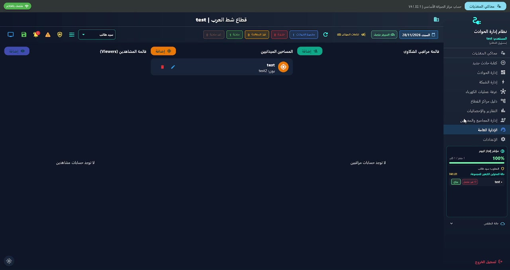

المساحون والمشاهدون ومراقبو الشكاوى
الفروق بين الأدوار وما الذي يظهر لكل مستخدم
شرح محدث: الرسم الميداني وصلاحيات المساح.
طبّق هذا الدرس بنفسك
واجهة تدريبية ببيانات افتراضية، لا تغيّر النظام أو بيانات المركز.
الشرح بالفيديو
الإدارة العامة: المساحون والمشاهدون ومراقبو الشكاوى
خطوات الشرح المصاحبة للتسجيل
- 00:00 — تعرض الإدارة العامة قوائم المساحين الميدانيين والمشاهدين ومراقبي الشكاوى كلٌ في قسمه.
التسجيل من النظام الفعلي المرسل من صاحب المشروع. الصوت محذوف؛ قد يختلف ترتيب الأزرار في الإصدارات الأحدث. الشرح المكتوب أدناه قد يشمل وظائف غير مصورة.
ليش توجد أدوار متعددة؟
الهدف هو إعطاء كل موظف الحد الضروري لأداء عمله. الشخص الذي يراجع المحطات ليس بالضرورة من يحق له تغيير الحسابات، والمشاهد لا يحتاج أزرار الحذف، ومراقب الشكاوى يركز على متابعة المعلومات وليس إدارة بيانات الدخول.
المخول الفني
المخول المرتبط بمجموعة صيانة يمكنه، بحسب صلاحيات جلسة الميدان، الاطلاع على الحوادث الموجهة له، واستلامها، ثم إرسال تقرير إنجاز أو تعذر، واستخدام أدوات الملاحة وإرسال نداءات تشغيلية.
حالة الواجب أو الإجازة تؤثر على إمكانية الاستلام، وقد يكون الاتصال مستقلاً عنها.
المساح الميداني
وظيفته مراجعة المحطات والمغذيات والمحولات والبيانات الميدانية والإحداثيات ضمن ما تسمح به نسخته وصلاحياته.
ينبغي التمييز بين اقتراح موقع GPS واعتماد الموقع الرسمي. فكرة الموافقة من غرفة العمليات تُوصى بها لحماية البيانات، وليست مضمونة التنفيذ في كل نسخة منشورة.
المشاهد
حساب للقراءة والمتابعة ضمن حدود ما يخوله المركز. في كود تطبيق الميدان توجد قيود تمنعه من استلام الحادث أو تغيير حالته. لا تشارك هذا الحساب مع المخول الفني لأنه يختلف في الوظائف.
مراقب الشكاوى
حساب مخصص لمتابعة بيانات وعمليات الشكاوى بحسب صلاحيات الخادم. في بعض نسخ Windows يستعمل لوحة مراقبة محدودة لا تعرض تفاصيل الدخول أو أزرار الإدارة الحساسة.
وجود صلاحية مشاهدة المجاميع لا يعني القدرة على تعديلها. يتحقق التطبيق والخادم من الدور والموارد المتاحة؛ والتصميم النهائي قد يختلف حسب إصدار مركز الصيانة.
مقارنة الأدوار
| العملية | مخول | مساح | مشاهد | مراقب شكاوى |
|---|---|---|---|---|
| عرض بيانات الحوادث | بحسب المجموعة | متابعة بحسب النطاق | قراءة | قراءة بحسب الدور |
| استلام حادث ميداني | نعم عند الأهلية | ليس وظيفة المساح الأساسية | لا | ليس وظيفة المراقب الأساسية |
| تقرير الإنجاز | للحوادث المستلمة | ليس وظيفة المساح الأساسية | لا | بحسب الواجهة والصلاحية |
| إدخال GPS | بحسب الدور والصلاحية | بحسب صلاحية المسح | لا | لا يفترض تلقائياً |
| إدارة حسابات العاملين | لا | لا | لا | لا |
متى أستخدم أي حساب؟
- إذا مهمتك إصلاح حادث، استخدم حساب المخول الميداني.
- إذا مهمتك تدقيق محولة أو موقعها، استخدم حساب المساح المصرح.
- إذا مهمتك الاطلاع فقط، استخدم حساب المشاهد.
- إذا مهمتك متابعة الشكاوى دون إدارة المركز، استخدم حساب مراقب الشكاوى.
- لا تتبادل أسماء المستخدمين وكلمات المرور بين الأشخاص.
صور من داخل النظام والتطبيق
مستخرجة مباشرة من التسجيلات المرسلة وليست واجهات مرسومة.

تقدر ترجع للفهرس أو تنتقل إلى الفصل التالي. إذا كان المطلوب يخص جهازك الفعلي، راجع صلاحية الحساب والإصدار المثبّت قبل تنفيذ أي خطوة.